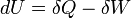

La hora del planeta y otras tonteras
Ya ha pasado un mes desde el terremoto.
Se siguen escuchando extrañas teorías conspiranoicas, y profecías de catástrofes más terribles por venir.
La gente busca señales. Como por ejemplo, que hoy es sábado, igual que el día del terremoto!, que curioso dicen algunos, cuando en realidad eso pasa casi todos los años no bisiestos, como febrero normalmente tiene 28 días, en marzo coinciden los días de la semana, así que es normal que el 27 de marzo y el 27 de febrero sean sábado, como es normal que si el día del terremoto había luna nueva, este día también la haya, dado que la luna tiene un ciclo de rotación y traslación de 28 días.
Que hace mucho calor, que hay luna nueva, que se vieron luces en el cielo.
En una lista de correo hice el comentario, inventado por supuesto, de que ese día no se vieron aves en el cielo, y no faltó gente que se quedó pensando, e incluso afirmaron que efectivamente había sido así. Eso lo inventé, sólo para ver el grado de credulidad de las personas.
Si alguien afirma que notó comportamiento extraño en los animales, no faltarán los que dirán que así fue, cuando probablemente de lo que menos se fijaron ese día fue en los animales. Dicen que estos sienten antes estas cosas, yo no sé, pero si es así mis mascotas no se enteraron, porque actuaron tan normal ese día como siempre, y después estaban tan asustadas como nosotros.
Ese es el problema con estas afirmaciones esotéricas, o seudo científicas, que nadie se para a validarla, a probar si son ciertas siquiera. Todo queda en el debe ser así porque lo dijieron en la tele, o en twitter, o porque salen en un video en internet.
Y así pasa con otras cosas, como esto de la hora del planeta. Una iniciativa que pretende aliviar a nuestro sufrido planeta mediante el gesto de apagar las luces durante una hora.
Bien, como gesto, puede ser, pero también podríamos ir a pararnos frente a las casas de nuestros gobernantes y mostrarles el dedo del medio en alto.
Porque si lo que crees que esto es para ahorrar energía, la verdad que esta iniciativa es bastante estúpida, porque sólo puedes ahorrar algo que se puede acabar. Si tienes dinero en tu bolsillo, puedes ahorrar para que te dure más, pero la energía no se puede ahorrar, puesto que la energía se genera, la energía sólo se “almacena” en forma de energía potencial. Porque si recuerdan lo que se supone les enseñaron en el colegio, la energía no se crea ni se destruye, sólo se transforma.

Si “todo el mundo” apaga la luz por una hora, lo que pasa es que las compañías de electricidad siguen generando energía, pero deben ajustarse para la menor demanda, y si nadie aprovecha ese excedente se pierde simplemente, si nadie toma medidas. Así que, o las generadoras de electricidad toman medidas para generar menos en ese rato, o estamos desperdiciando mucha energía, lo que es una verdadera tontera.
Conozco adolescentes que están preocupados de esto de la hora del planeta, y han pasado todo el día previo, y las horas posteriores jugando Play Station frente a un plasma de 42 pulgadas. También adultos, que apagan todo, durante una hora y después van a ver una película en su home theater, y calientan pizzas o palomitas en sus microondas, y acá no ha pasado nada, con sus conciencias ecológicas limpiecitas.
La gracia, el impacto realmente importante es disminuir el gasto de energía en forma permanente. Eso si que es importante.
Usar ampolletas de bajo consumo, cambiar los plasmas y los monitores antiguos que usan tubos por tecnologías más baratas, como el LCD. Usar los computadores en cosas útiles, apagar la tele y leer libros, no tener todas las luces encendidas. Eso es una forma inteligente de disminuir el gasto energético.